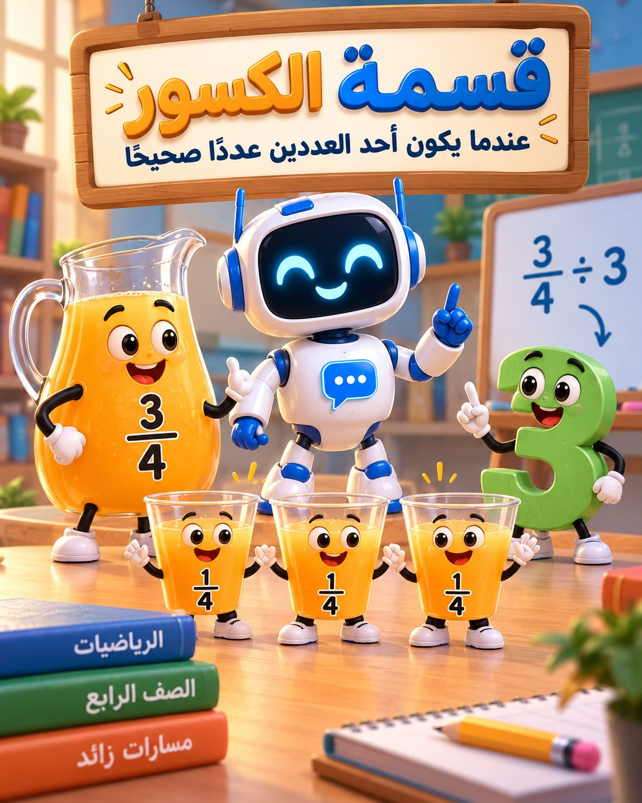

الدرس الأول: عندما يكون أحد العددين عددًا صحيحًا — «مختبر العصائر».

أعرض 34 لتر عصير وأسأل: إذا اقتسمه 3 أطفال بالتساوي، فكم يحصل كل طفل؟ أسجّل التوقعات دون إعطاء قاعدة.
تلوّن كل مجموعة 3 أجزاء من شريط مقسم إلى 4 أرباع، ثم توزّع الأجزاء على 3 أطفال. نستنتج: 34 ÷ 3 = 14. أسأل: لماذا نصيب الطفل ربع؟
لدينا لتران من العصير وأكواب سعة كل منها 14 لتر. يمثّل الطلاب كم ربعًا في اللترين ويستنتجون: 2 ÷ 14 = 8 أكواب.
أربع محطات، 3 دقائق لكل محطة: التوزيع، ملء الأكواب، اكتشاف الخطأ، تأليف مسألة.
يناقش الطلاب الفرق بين التوزيع وعدّ الأجزاء، ويتحققون من النتائج بالضرب، ثم يحلون بطاقة الخروج.
لدينا 68 لتر عصير نوزعه على 3 أطفال. كم يحصل كل طفل؟ ارسم ثم اكتب التمرين.
لدينا 3 لترات عصير، وسعة كل كوب 12 لتر. كم كوبًا نملأ؟ مثّل الحل.
قال طالب: 45 ÷ 2 = 410. هل إجابته صحيحة؟ هل يمكن اختزال الناتج؟
اكتب مسألة كلامية مناسبة لأحد التمرينين: 35 ÷ 3 أو 2 ÷ 15.
نوزّع الكمية بالتساوي.
نبحث عن عدد المجموعات أو الأجزاء الصغيرة.
استخدام شرائط مرئية وكسور سهلة مثل 46 ÷ 2.
اختزال الناتج والتحقق بالضرب.
تفسير 34 ÷ 5 بالرسم، ومناقشة أمثلة تتضمن أعدادًا مختلطة.
الخطة كاملة كما أُعدّت: الأهداف، سير الحصة، المحطات، بطاقة الخروج ومفتاح الإجابة
صفحتان للطباعة مع أشرطة كسور، وورقة حل للمعلمة.
5 محطات: نوزّع العصير ونملأ الأكواب، مع رسم توضيحي ونجوم ومتتاليات.
20 بطاقة تحدٍّ يلعبها الصف كله معًا على الشاشة، مع نقاط للفصل وللروبوت.
ابعتيلي ملخصات أو أوراق عمل لقسمة الكسور، وبضيفها هنا بنفس التصميم.